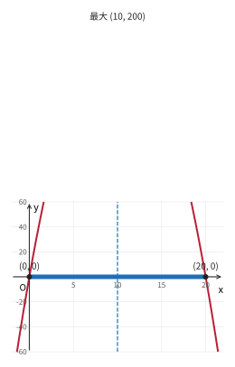
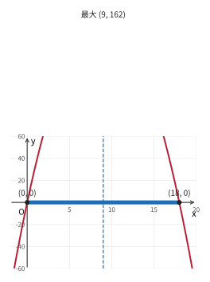
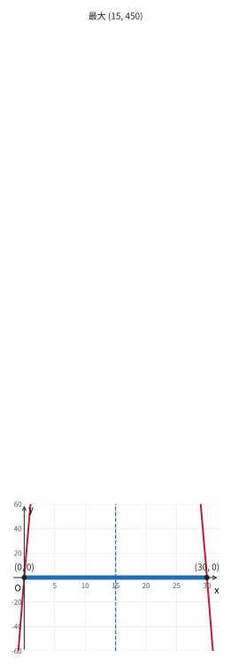

ホーム ＞ 数学I ＞ 2次関数の最大・最小
別冊練習問題 6 の解答 壁を使った囲いの面積の最大
(1) 長さ \(40\) m の柵を使い、壁を一辺として長方形の囲いをつくる。囲いの面積の最大値と、そのときの壁に垂直な辺の長さを求めよ。
文字を決める
壁に垂直な辺を \(x\) m とすると、壁に平行な辺は \(40-2x\) m。長さが正なので \(0<x<20\)。
面積 \(S\) を \(x\) の関数としてグラフにする。太線が範囲 \(0<x<20\)。

面積の式
\[S=x(40-2x)=-2x^2+40x=-2\left(x-10\right)^2+200\]最大値
\(x=10\) は範囲 \(0<x<20\) に含まれるので、最大値は
\[200\ \text{m}^2\]【答案】
\[x=10\ \text{のとき最大 }200\ \text{m}^2\]答
(2) 長さ \(36\) m の柵を使い、壁を一辺として長方形の囲いをつくる。囲いの面積の最大値と、そのときの壁に垂直な辺の長さを求めよ。
文字を決める
壁に垂直な辺を \(x\) m とすると、壁に平行な辺は \(36-2x\) m。長さが正なので \(0<x<18\)。
面積 \(S\) を \(x\) の関数としてグラフにする。太線が範囲 \(0<x<18\)。

面積の式
\[S=x(36-2x)=-2x^2+36x=-2\left(x-9\right)^2+162\]最大値
\(x=9\) は範囲 \(0<x<18\) に含まれるので、最大値は
\[162\ \text{m}^2\]【答案】
\[x=9\ \text{のとき最大 }162\ \text{m}^2\]答
(3) 長さ \(60\) m の柵を使い、壁を一辺として長方形の囲いをつくる。囲いの面積の最大値と、そのときの壁に垂直な辺の長さを求めよ。
文字を決める
壁に垂直な辺を \(x\) m とすると、壁に平行な辺は \(60-2x\) m。長さが正なので \(0<x<30\)。
面積 \(S\) を \(x\) の関数としてグラフにする。太線が範囲 \(0<x<30\)。

面積の式
\[S=x(60-2x)=-2x^2+60x=-2\left(x-15\right)^2+450\]最大値
\(x=15\) は範囲 \(0<x<30\) に含まれるので、最大値は
\[450\ \text{m}^2\]【答案】
\[x=15\ \text{のとき最大 }450\ \text{m}^2\]答